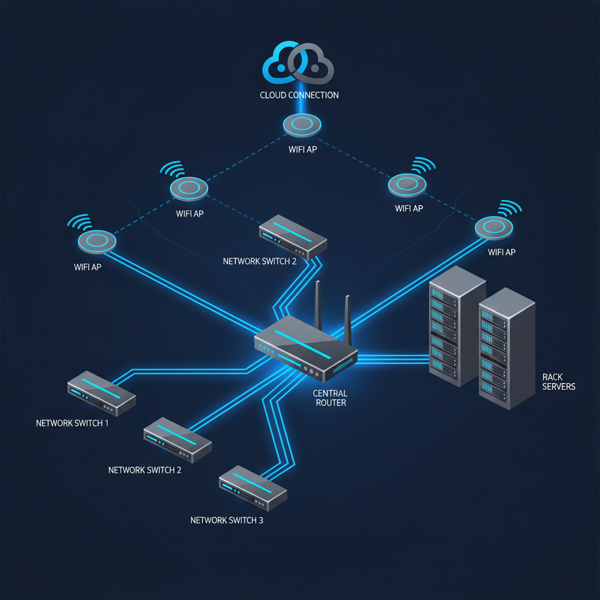
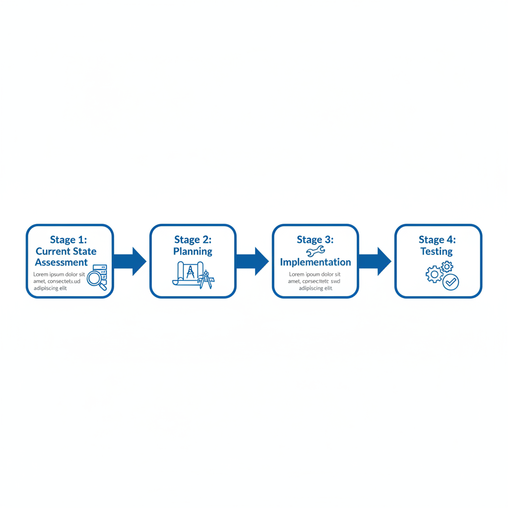

תשתית רשת טובה לא מורגשת. היא פשוט עובדת.
תשתית רעה מורגשת בכל דקה — בחיבורים שנפסקים, בשיחות וידאו שמתפרקות, במערכות שנתקעות ברגע הכי לא מתאים.

מדובר בכל מה שמאפשר למחשבים ולמכשירים של הארגון לדבר אחד עם השני — ועם העולם. זה כולל כבלים, נתבים, מתגים, נקודות גישה אלחוטיות, שרתים, וכל שכבת תוכנה שמנהלת את התנועה הזו.
בארגון של היום, הרשת היא עמוד השדרה של כל פעולה עסקית: תקשורת פנים-ארגונית, גישה למערכות, שיתוף קבצים, שירות לקוחות. כשהיא עובדת — אף אחד לא שם לב. כשהיא לא עובדת — כולם יודעים.
CAT6 הוא המינימום הסביר לחיבורים קוויים. CAT7 מספק עד 10 Gbps ומתאים לתחנות עבודה כבדות, שרתים וציוד קריטי. סיבים אופטיים נכנסים לתמונה כשנפח הנתונים גדול מדי לנחושת.
נתבים (Routers) מנהלים את התנועה בין הרשת הפנימית לאינטרנט. מתגים (Switches) מחלקים את הרשת הפנימית ומאפשרים לעשרות מכשירים לתקשר בו-זמנית. ארון תקשורת 44U עולה בין 2,800 ל-4,500 ₪.
הדור השישי של אלחוט — יותר מכשירים בו-זמנית, מהירויות גבוהות יותר, צריכת חשמל נמוכה יותר. חובה במשרד עם 30+ עובדים.
| רכיב | עלות |
|---|---|
| נקודת רשת קווית | 300–400 ₪ |
| ארון תקשורת 44U | 2,800–4,500 ₪ |
| מתג מנוהל | 450–2,500 ₪ |
| אינטרנט סיבים — עסק קטן (עד 10 עובדים) | 350–800 ₪/חודש |
| אינטרנט סיבים — עסק בינוני | 700–1,500+ ₪/חודש |

שדרוג תשתית IT הוא פרויקט, לא קנייה. ארגונים שמתייחסים אליו כרכישה של ציוד מגלים שקנו את הדבר הלא נכון.
הערכת מצב קיים — מודדים עומסים, בודקים מהירויות, מזהים פערים.
תכנון לצמיחה — התשתית צריכה לתמוך גם בצרכים של עוד שלוש שנים.
בחירת טכנולוגיה לפי צרכים — לא לפי טרנד. Wi-Fi 6 מפורסם, אבל לעובדים קבועים — אתרנט עדיף.
בחירת ספק עם SLA אמיתי — לדרוש קנסות מוגדרים. SLA בלי שיניים הוא ניר.
יישום מבוקר — סקר אתר, תכנון הנדסי, פריסת כבלים, בדיקות קבלה.
הדרכה ותמיכה שוטפת — ניטור ותחזוקה יזומה, לא תגובתית.
תמיכה טכנית 24/7 ו-IP סטטי הם בונוסים חשובים — חובה לכל מי שמפעיל מערכות אבטחה עם גישה מרחוק.
תשתית ענן ותשתית מקומית (On-Premise) משלימות אחת את השנייה.
רוב הארגונים מגיעים בסוף לתמהיל היברידי. הטריק הוא לתכנן אותו מראש ולא לגלות אותו במקרה.
תשתית רשת טובה היא כזו שלא צריך לחשוב עליה. היא סקיילבילית (מתמשכת עם הצמיחה), גמישה (מסתגלת לטכנולוגיות חדשות), אמינה (זמינות גבוהה עם גיבויים), מאובטחת (מגנה על הנכסים), ועולה מה שהיא שווה — לא יותר.
ההשקעה הנכונה מראש חוסכת הרבה יותר ממה שהיא עולה. השבתה של שעה בארגון של 50 עובדים עולה הרבה יותר מנקודת רשת נוספת.
קבלו ייעוץ מקצועי מותאם לגודל הארגון ולצרכים שלכם — ללא עלות ראשונית.
צרו קשר עכשיו